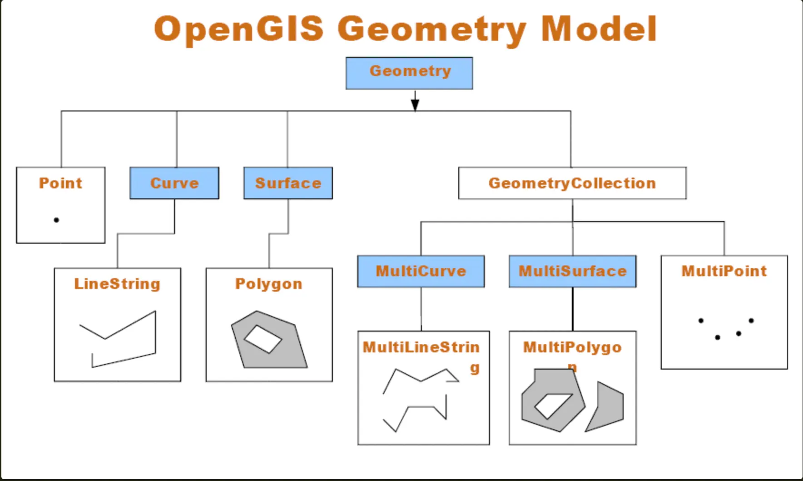

MySQL
AI 导读一分钟导读，先掌握全文主干。
核心观点
- 按「SQL 基础 → 数据类型 → 分区表 → DML → 特有功能 → EXPLAIN → 碎片维护 → 版本现状」组织，适合当文档查
- MySQL 9.7 LTS（2026）带来新特性；8.0 已 EOL，升级路线需提前规划
- Explain 优化、碎片成因与免密码登录等实操小节可直接抄
关键结论与取舍
- 8.0 EOL 后建议按 8.4 LTS → 9.7 LTS 路径升级，避开创新版踩坑
- 碎片与索引劣化是线上性能问题的常见源头，先学维护手法
这份是 MySQL 速查手册，章节顺序按「SQL 基础 → 数据类型 → 分区表 → DML → 特有功能 → EXPLAIN 优化 → 碎片维护 → 版本现状」铺开，当文档翻就行；文末 8.0 EOL 和 9.7 LTS 是 2026 年的现役事实，要不要升级先看那段。
SQL
-
MySQL 没把标准 SQL 全部实现sql标准
-
大小写不敏感，约定俗成：内置关键字、函数名用大写，用户表名、列名、参数用小写
-
分号是语句结束符，一行能写多条语句，一条语句也能跨多行。
-
支持多种 sql_mode，建议开 strict mode
-
默认 autocommit，除非显式关掉
-
注释
- 单行：# 打头，直到行尾
- 单行：两个连字符
--打头（后面必须跟一个空格），到行尾 - 多行：以 开头， 收尾，C 风格
-
字符集（Character）与校对规则（Collation）
- 每个字符集都自带一个默认校对规则，也能挂多个
- 变量 character_set_server 记服务器默认值，8.0 起默认 utf8mb4（能存各种 emoji，最多 4 字节）
- 库 / 表 / 字段都能单独指定：库没指定就继承服务器，表没指定继承库，字段没指定继承表
- character_set_client：服务器认定的客户端 SQL 编码
- character_set_connection：执行 SQL 用的内部编码，服务器把客户端 SQL 从 client 编码转成 connection 编码
- character_set_results：返回结果集的编码
- 客户端可以在连接参数里一次性敲定这三个值
-
自带四个系统库
- information_schema：存所有库 / 表 / 列 / 索引 / 权限等元信息
- performance_schema：采集服务器性能参数、资源占用和等待事件
- sys：把 performance_schema 的数据加工成 DBA 看得懂的视图
- mysql：存用户、权限、关键字等 MySQL 自身运转必需的信息
-
程序表
名称 作用 mysqld 服务器 mysqld_safe 用来启动mysqld的脚本 mysql.server 系统启动脚本，调用mysqld_safe脚本 mysqld_multi 允许同时多个mysqld进程 mysql 客户端 mysqladmin 客户端管理数据库 mysqldump 客户端导出数据 mysqlimport 客户端导入数据 -
联表
...
joined_table: {
table_reference {[INNER | CROSS] JOIN | STRAIGHT_JOIN} table_factor [join_specification]
| table_reference {LEFT|RIGHT} [OUTER] JOIN table_reference join_specification
| table_reference NATURAL [INNER | {LEFT|RIGHT} [OUTER]] JOIN table_factor
}
join_specification: {
ON search_condition
| USING (join_column_list) }
...-
JOIN、CROSS JOIN、INNER JOIN 三者等价，这点跟 SQL 标准不一致
// 简化翻译sql逻辑 // select tbl1.col1, tbl2.col2 from tbl1 inner join tbl2 using(col3) where tbl1.col1 in (5, 6); // 内联没有指明驱动表,优化器会根据过滤行数少作为驱动表,这里假设选择tbl1作为驱动表 // STRAIGHT_JOIN用来指定哪个表作为驱动表,示例如下: // select tbl1.col1, tbl2.col2 from tbl1 STRAIGHT_JOIN tbl2 using(col3) where tbl1.col1 in (5, 6); outer_iter = iterator over tbl1 where col1 in (5, 6) outer_row = outer_iter.next while outer_row inner_iter = iterator over tbl2 where col3 = outer_row.col3 inner_row = inner_iter.next while inner_row output [ outer_row.col1, inner_row.col2] inner_row = inner_iter.next end outer_row = outer_iter.next end -
LEFT / RIGHT [OUTER] JOIN 的 OUTER 关键字可省，写不写效果一样
// 简化翻译sql逻辑 // select tbl1.col1, tbl2.col2 from tbl1 left outer join tbl2 using(col3) where tbl1.col1 in (5, 6); // left,right表明了哪个表作为驱动表 outer_iter = iterator over tbl1 where col1 in (5, 6) outer_row = outer_iter.next while outer_row inner_iter = iterator over tbl2 where col3 = outer_row.col3 inner_row = inner_iter.next if inner_row while inner_row output [ outer_row.col1, inner_row.col2] inner_row = inner_iter.next end else output [ outer_row.col1, null] end outer_row = outer_iter.next end -
FULL OUTER JOIN 暂时没有：需要时拿
LEFT JOIN ... UNION ALL RIGHT JOIN ... WHERE 左表主键 IS NULL来模拟 -
NATURAL 表示 join_specification 走 USING(join_column_list)，列名不用手写，自动取两张表都有的同名列
-
EXPLAIN / DESCRIBE / DESC 是一回事
-- 获取表结构/信息 {EXPLAIN | DESCRIBE | DESC} tbl_name [col_name | wild] -- 获取执行计划信息 {EXPLAIN | DESCRIBE | DESC} [explain_type] {explainable_stmt | FOR CONNECTION connection_id} -- 获取更详执行计划细信息 {EXPLAIN | DESCRIBE | DESC} ANALYZE [FORMAT = TREE] select_statement explain_type: { FORMAT = format_name } format_name: { TRADITIONAL | JSON | TREE } explainable_stmt: { SELECT statement | TABLE statement | DELETE statement | INSERT statement | REPLACE statement | UPDATE statement } -
help 语句
-- 显示select语句语法,较便利
HELP 'select'数据类型
-
数字默认有符号（SIGNED），要无符号（UNSIGNED）得显式声明
类型 字节数 TINYINT 1 SMALLINT 2 MEDIUMINT 3 INT 4 BIGINT 8 FLOAT 4 DOUBLE 8 DECIMAL 二进制存储 - 还有一些别名
- 所有算术都用有符号 BIGINT 或 DOUBLE 运算
-
时间
类型 范围 零值 说明 DATE ‘1000-01-01’到'9999-12-31’ ‘0000-00-00’ 年月日 TIME ‘-838:59:59.000000’到'838:59:59.000000’ ‘00:00:00’ 时分秒 DATETIME ‘1000-01-01 00:00:00’到'9999-12-31 23:59:59’ 0000-00-00 00:00:00 年月日时分秒 TIMESTAMP ‘1970-01-01 00:00:01.000000’到'2038-01-19 03:14:07.999999’ 0000-00-00 00:00:00 时间戳 YEAR 别用 ‘0000’ 别用，有坑 两个常踩的坑：①
TIMESTAMP只有 4 字节，2038-01-19 之后会溢出，碰到 2038 年以后的日期（比如证件有效期）请改用DATETIME；② 表里的0000-00-00零值日期只有在非严格模式（没开NO_ZERO_DATE）时才放行，strict 模式下写入直接报错。- TIME / DATETIME / TIMESTAMP 默认精确到秒，加参数能指定小数位，最多 6 位
create table mytime ( id BIGINT UNSIGNED AUTO_INCREMENT PRIMARY KEY, -- '00:00:00.000000' t TIME(6) not null, -- '1000-01-01 00:00:00.00000' dt DATETIME(5) not null, ts TIMESTAMP(4) not null, t2 TIME(3) not null, dt2 DATETIME(2) not null, ts2 TIMESTAMP(1) not null );- DATETIME 和 TIMESTAMP 都能用 DEFAULT CURRENT_TIMESTAMP 设默认值
-
字符串
-
char
- CHAR(len) / VARCHAR(len) 最多存 len 个字符，实际占多少字节由字符集决定
- char 定长，varchar 变长，这里的「长」指存储占用的字节
- varchar 默认会去掉尾部空格
-
binary
- BINARY(len) / VARBINARY(len) 最多存 len 个字节，字符先经字符集转成字节再存
-
短字符串
字符存储 字节存储 char binary varchar varbinary -
长字符串
text(字符存储，类似char) blob(字节存储，类似binary) tinytext tinyblob mediumtext mediumblob text blob longtext longblob
-
-
json
create table js(v json); insert into js(v) values('[10, 20, 30]'); insert into js(v) values('{"a":10}');
分区表
-
分类类型
- RANGE：分区要指定范围
CREATE TABLE employees ( id INT NOT NULL, fname VARCHAR(30), lname VARCHAR(30), hired DATE NOT NULL DEFAULT '1970-01-01', separated DATE NOT NULL DEFAULT '9999-12-31', job_code INT NOT NULL, store_id INT NOT NULL ) PARTITION BY RANGE (store_id) ( PARTITION p0 VALUES LESS THAN (6), PARTITION p1 VALUES LESS THAN (11), PARTITION p2 VALUES LESS THAN (16), PARTITION p3 VALUES LESS THAN MAXVALUE );- LIST：分区要指定集合，每条记录只能落进一个集合
CREATE TABLE person ( id INT NOT NULL, fname VARCHAR(30), lname VARCHAR(30), hired DATE NOT NULL DEFAULT '1970-01-01', separated DATE NOT NULL DEFAULT '9999-12-31', job_code INT, store_id INT ) PARTITION BY LIST(store_id) ( PARTITION pNorth VALUES IN (3, 5, 6, 9, 17), PARTITION pEast VALUES IN (1, 2, 10, 11, 19, 20), PARTITION pWest VALUES IN (4, 12, 13, 14, 18), PARTITION pCentral VALUES IN (7, 8, 15, 16) );- HASH：注意 hash 分布，容易造成热点分区
CREATE TABLE worker ( id INT NOT NULL, fname VARCHAR(30), lname VARCHAR(30), hired DATE NOT NULL DEFAULT '1970-01-01', separated DATE NOT NULL DEFAULT '9999-12-31', job_code INT, store_id INT ) PARTITION BY [LINEAR] HASH(store_id) PARTITIONS 4; -- LINEAR HASH：线性哈希，增删分区影响小，但数据分布不如普通 HASH 均匀- KEY：隐式 hash，服务器用 hash(key) 实现，key 可任意类型
CREATE TABLE tm1 (s1 CHAR(32) PRIMARY KEY) PARTITION BY KEY(s1) PARTITIONS 10; -
分区裁剪（pruning）
# where子句能够转化为下面两种,optimizer优化器就能选定分区,省去不必要查找
partition_column = constant
partition_column IN (constant1, constant2, ..., constantN)
# select update delete 都需要注意
# insert 只会影响一个分区,不必考虑分区修剪-
Subpartitioning 子分区
-
select 语法
SELECT
[ALL | DISTINCT | DISTINCTROW ]
[HIGH_PRIORITY]
[STRAIGHT_JOIN]
[SQL_SMALL_RESULT] [SQL_BIG_RESULT] [SQL_BUFFER_RESULT]
[SQL_NO_CACHE] [SQL_CALC_FOUND_ROWS]
-- 8.0 起查询缓存已移除：SQL_NO_CACHE 关键字失效；SQL_CALC_FOUND_ROWS 自 8.0.17 弃用，取总数请用 COUNT(*) OVER()
select_expr [, select_expr] ...
[into_option]
[FROM table_references
[PARTITION partition_list]]
[WHERE where_condition]
[GROUP BY {col_name | expr | position}, ... [WITH ROLLUP]]
[HAVING where_condition]
[WINDOW window_name AS (window_spec)
[, window_name AS (window_spec)] ...]
[ORDER BY {col_name | expr | position}
[ASC | DESC], ... [WITH ROLLUP]]
[LIMIT {[offset,] row_count | row_count OFFSET offset}]
[into_option]
[FOR {UPDATE | SHARE}
[OF tbl_name [, tbl_name] ...]
[NOWAIT | SKIP LOCKED]
| LOCK IN SHARE MODE]
[into_option]
into_option: {
INTO OUTFILE 'file_name'
[CHARACTER SET charset_name]
export_options
| INTO DUMPFILE 'file_name'
| INTO var_name [, var_name] ...
}- insert
[INTO] tbl_name
[PARTITION (partition_name [, partition_name] ...)]
[(col_name [, col_name] ...)]
{ {VALUES | VALUE} (value_list) [, (value_list)] ... }
[AS row_alias[(col_alias [, col_alias] ...)]]
[ON DUPLICATE KEY UPDATE assignment_list]
INSERT [LOW_PRIORITY | DELAYED | HIGH_PRIORITY] [IGNORE]
[INTO] tbl_name
[PARTITION (partition_name [, partition_name] ...)]
[AS row_alias[(col_alias [, col_alias] ...)]]
SET assignment_list
[ON DUPLICATE KEY UPDATE assignment_list]
INSERT [LOW_PRIORITY | HIGH_PRIORITY] [IGNORE]
[INTO] tbl_name
[PARTITION (partition_name [, partition_name] ...)]
[(col_name [, col_name] ...)]
[AS row_alias[(col_alias [, col_alias] ...)]]
{SELECT ...
| TABLE table_name
| VALUES row_constructor_list
}
[ON DUPLICATE KEY UPDATE assignment_list]-
实例解释
-- 每列采用默认值插入 INSERT INTO tbl_name () VALUES(); -- 允许后面出现的列引用前面列值 -- AUTO_INCREMENT在列赋值之后,所以引用此列值会为0 INSERT INTO tbl_name (col1,col2) VALUES(15,col1*2); -- With INSERT ... SELECT插入多行,速度较快,ta表中AUTO_INCREMENT仍然自增,先赋值才执行AUTO_INCREMENT -- 等价于 INSERT INTO ta SELECT * FROM tb INSERT INTO ta TABLE tb; -- 附上DUPLICATE,要求a,b,c至少一个是唯一或主键 -- 当多个是唯一或主键时,任选一个执行 -- UPDATE t1 SET c=c+1 WHERE a=1 OR b=2 LIMIT 1; INSERT INTO t1 (a,b,c) VALUES (1,2,3) ON DUPLICATE KEY UPDATE c=c+1; -- VALUES(colname)用来引用指定列插入值,相当于下面两句结果 -- INSERT INTO t1 (a,b,c) VALUES (1,2,3) ON DUPLICATE KEY UPDATE c=3; -- INSERT INTO t1 (a,b,c) VALUES (4,5,6) ON DUPLICATE KEY UPDATE c=9; INSERT INTO t1 (a,b,c) VALUES (1,2,3),(4,5,6) ON DUPLICATE KEY UPDATE c=VALUES(a)+VALUES(b); -
delete
-
删除的自增 id 不会被复用
-
单表
DELETE [LOW_PRIORITY] [QUICK] [IGNORE] FROM tbl_name [[AS] tbl_alias] [PARTITION (partition_name [, partition_name] ...)] [WHERE where_condition] -- 删除顺序,配合limit可用来分段删除 [ORDER BY ...] -- 限制删除行数,通常用来防止删除影响其他业务,每次只删除部分,多次删除 [LIMIT row_count]- 多表
DELETE [LOW_PRIORITY] [QUICK] [IGNORE] -- 删除在from之前的表中行 tbl_name[.*] [, tbl_name[.*]] ... FROM table_references [WHERE where_condition] DELETE [LOW_PRIORITY] [QUICK] [IGNORE] -- 删除在from子句中表的行 FROM tbl_name[.*] [, tbl_name[.*]] ... USING table_references [WHERE where_condition]- 大表批量删行，InnoDB 有专门优化
-- 把不删除数据插入一张新表中 INSERT INTO t_copy SELECT * FROM t WHERE ... ; -- 新表,老表互换名字 RENAME TABLE t TO t_old, t_copy TO t; -- 删除老表,但名字为改名后 DROP TABLE t_old; -
-
replace
REPLACE [LOW_PRIORITY | DELAYED]
[INTO] tbl_name
[PARTITION (partition_name [, partition_name] ...)]
[(col_name [, col_name] ...)]
{ {VALUES | VALUE} (value_list) [, (value_list)] ...
|
VALUES row_constructor_list
}
REPLACE [LOW_PRIORITY | DELAYED]
[INTO] tbl_name
[PARTITION (partition_name [, partition_name] ...)]
SET assignment_list
REPLACE [LOW_PRIORITY | DELAYED]
[INTO] tbl_name
[PARTITION (partition_name [, partition_name] ...)]
[(col_name [, col_name] ...)]
{SELECT ... | TABLE table_name}- update
UPDATE [LOW_PRIORITY] [IGNORE] table_reference
SET assignment_list
[WHERE where_condition]
[ORDER BY ...]
[LIMIT row_count]特有功能
show databases;
use databasename;
show tables;
describe tablename;
#从本地导入数据
#windows用\r\n,mac用\r,linux用\n
LOAD DATA LOCAL INFILE '/path/pet.txt' INTO TABLE tablename LINES TERMINATED BY '\r\n';
#mysql查变量,获取mysql默认行为,各种参数值
SHOW VARIABLES;
#只关注想要的
SHOW VARIABLES LIKE '%timeout%'
# 查看客户端连接详情,用来检查执行客户端的sql情况，特别慢查询,多连接
show full processlist;
#客户端连接数
select client_ip,count(client_ip) as client_num
from (select substring_index(host,':' ,1) as client_ip from information_schema.processlist ) as connect_info
group by client_ip order by client_num desc;
#执行sql时间倒序
select * from information_schema.processlist where Command != 'Sleep' order by Time desc;
# 查看表创建语句
show create table xx;
#mysql关闭安全模式
show variables like 'SQL_SAFE_UPDATES';
SET SQL_SAFE_UPDATES = 0;
#通用日志,调试好帮手,需要root权限
show variables like '%general%';
set @@global.general_log=1;
set @@global.general_log=0;
# 设置连接超时时间,下次登陆有效
show variables like '%timeout%';
--604800=60*60*24
set @@GLOBAL.interactive_timeout=604800;
set @@GLOBAL.wait_timeout=604800;
# 查看默认引擎
show engines;
# 查询表中重复数据
select col from table group by col having count(col) > 1;
# 带忽略重复的插入
insert ignore into table(name) value('xx')
# 常用时间函数
FROM_UNIXTIME(unix_timestamp)是MySQL里的时间函数。
UNIX_TIMESTAMP('2018-09-17') 是与之相对正好相反的时间函数 。
# IF条件表达式
IF(expr1,expr2,expr3)
--如果 expr1 为真(expr1 <> 0 以及 expr1 <> NULL)，那么 IF() 返回 expr2，否则返回 expr3。IF() 返回一个数字或字符串，这取决于它被使用的语境：
#concat把int转varchar类型
update user set nickname = concat(id,'号') where id > 0;
# 字符串替换（REPLACE 第 2、3 参按字符串匹配；int 列会隐式转字符串，建议用字符串列演示）
update user set nickname = REPLACE(id,'old', 'now') where id > 0
# 查询数据库占用空间及索引空间
# Binlog,阿里云的rds默认把它也计算在内,要手动设置控制大小.大量数据删除时,会突然增加Binlog文件
select TABLE_NAME, concat(truncate(data_length/1024/1024,2),' MB') as data_size,
concat(truncate(index_length/1024/1024,2),' MB') as index_size
from information_schema.tables where TABLE_SCHEMA = 'databaseName'# 修改root密码（8.0 起 PASSWORD() 函数已移除，必须用 ALTER USER）
killall mysqld
mysqld_safe --skip-grant-tables &
ALTER USER 'root'@'localhost' IDENTIFIED BY 'newpassword';
FLUSH PRIVILEGES;
# 用 mysqladmin shutdown 关掉跳过授权表的实例，再正常启动 mysqld
# 设置默认字符集
mysql -u user -D db --default-character-set=utf8 -pexplain优化sql
explain select col from table where con group by xx order by yy;字段说明：
- table：这条语句涉及的表
- type：很关键的一列，显示连接类型和有没有走索引，直接反映语句质量。
- possible_keys：MySQL 可能用到的索引
- key：MySQL 实际选用的索引，没选就是 NULL。
- key_len：MySQL 决定用的索引长度，键为 NULL 时长度也是 NULL；在不丢精度的前提下，越短越好。
- ref：和 key 配合从表里取行的列或常量。
- rows：MySQL 估算要扫描的行数。
- extra：MySQL 解析查询的附加信息。
- 其中 EXPLAIN 的 type 是访问类型，是最该盯的指标，从好到坏：
碎片产生的原因
- 表存储会出现碎片：每删一行，那段空间就空出来被闲置；大批量删除之后，这些空洞可能比实际数据占的空间还大；
- 插入时 MySQL 会尝试填这些空洞，但只要空洞大小对不上数据，就一直塞不进去，碎片就这么攒下来；
- 扫描时，MySQL 实际扫的是高水位线以内的范围，也就是数据曾经写到的最远位置；
- 删完数据记得 OPTIMIZE TABLE xx，否则空间不会释放（该命令会短暂锁表，8.0 建议放维护窗口做，或者用 pt-online-schema-change / gh-ost 这类工具在线整理）
举个例子：一张表 1 万行、每行 10 字节，占 10 万字节；删到只剩 1 行，实际数据才 10 字节，但 MySQL 读取时仍按 10 万字节处理——碎片越多，查询越慢。
免密码登陆
-
借助 .my.cnf
vi ~/.my.cnf [client] # 注意mysql的库中user表,localhost和127.0.0.1区别 host = "127.0.0.1" user = "user" password = "pwd" database = "xx" -
用命令行参数，或者别名
mysql -h localhost -u root -p xxx
小知识
- 哪个是 JOIN，哪个是过滤条件？
-- 隐式内联,不好理解容易出错,不建议
-- a,b ==> inner join 简写
-- a.ID = b.ID ==> 用来关联,不是过滤,
SELECT * FROM a,b WHERE a.ID = b.ID
-- 显示内联,建议这种
-- a JOIN b ==> inner join
SELECT * FROM a JOIN b ON a.ID = b.ID
-- USING(ID) == > ON a.ID = b.ID
-- 要求两个表都存在ID列
SELECT * FROM a JOIN b USING(ID)- 分组连接
select sch_id, count(sch_id) as c, GROUP_CONCAT(sch_name) from sch_basic_info sbi group by sch_id HAVING count(sch_id) > 1 order by c desc;
select GROUP_CONCAT(sch_name) from sch_basic_info sbi group by sch_id HAVING count(sch_id) > 1;- 支持 OpenGIS、geometry

- Geometry（不可实例化）
- Point（可实例化）
- Curve（不可实例化）
- LineString（可实例化）
- Line
- LinearRing
- Surface（不可实例化）
- Polygon（可实例化）
- GeometryCollection（可实例化）
- MultiPoint（可实例化）
- MultiCurve（不可实例化）
- MultiLineString（可实例化）
- MultiSurface（不可实例化）
- MultiPolygon（可实例化）
附录
MySQL 8.0 EOL 与 9.7 LTS（2024-2026 更新）
创新发布模型与版本现状
MySQL 自 8.1.0 起走双轨发布：LTS 版给 5 年首发 + 3 年扩展支持，创新版每 3 个月挤一波新特性。2026-04-21 Oracle 同步放出 8.0.46（8.0 系列收官版）、8.4.9 LTS 和 9.7.0 LTS，宣告 8.0 时代落幕，9.x 正式接过长期支持的接力棒。
| 版本 | 类型 | 状态 |
|---|---|---|
| MySQL 8.0 | LTS（旧模型） | 2026-04-21 EOL（8.0.46 终章） |
| MySQL 8.4 | LTS | 支持至 2032-04 |
| MySQL 9.7 | LTS（2026-04-21 转正） | 5+3 年，约至 2034 |
| MySQL 9.x | 创新版 | 每 3 个月更新（9.0-9.6、9.8+） |
MySQL 9.7 LTS 新特性（2026）
9.7 是 9.x 创新系列的集大成：一堆原企业版功能下放给社区版，社区版就能用到优化器改进、JSON Duality 和可观测性能力，被定调为「AI 与云原生时代」的新一代 LTS。
- JSON Duality：同一份数据既能当关系表用，也能当 JSON 文档用，双向同步。
- 优化器与可观测性下放：9.x 系列的优化器改进、可观测性能力进了社区版。
- Change Buffer 重构：覆盖二级索引、全文索引、空间索引，
innodb_change_buffering默认none，改成分时限流合并，IO 抖动更平缓。 - Log Buffer：默认 64MB（老版本 16MB），支持
SET GLOBAL在线调参，自适应刷盘，undo buffer 也独立拆出来了。 - AHI 分区锁：Adaptive Hash Index 换成细粒度分区锁（默认 64 分区），支持单表开关，淘汰策略更优。
- 移除 mysql_native_password：老认证插件彻底下线，升级前先确认客户端和驱动还支不支持。
- AI 向量能力：搭配 HeatWave 做向量检索，能撑 RAG、语义搜索这类场景。
MySQL 9.0-9.6 创新版特性
- JavaScript 存储程序：
CREATE FUNCTION ... LANGUAGE JAVASCRIPT，能用 JS 写存储函数。 - 向量数据类型：
VECTOR数据类型（走 MySQL HeatWave），支持 AI 向量搜索。 - EXPLAIN INTO：把执行计划存进变量。
- 权限管理增强：
SET ANY PRIVILEGE等系统权限。 - 权限分析：
PRIVILEGE_CHECKS_USER改进。
MySQL 8.4 LTS 特性
- InnoDB 改进：并行查询、自适应搜索都做了改进。
- JSON 增强：
JSON_TABLE、JSON_SCHEMA_VALID等函数。 - 窗口函数：
ROW_NUMBER()、RANK()、LEAD()/LAG()等（8.0+）。 - CTE 递归查询：
WITH RECURSIVE。 - 不可见索引：
ALTER TABLE t ALTER INDEX i INVISIBLE，用来测删索引的影响。 - 降序索引：支持
INDEX(idx_col DESC)。 - 直方图统计：
ANALYZE TABLE t UPDATE HISTOGRAM ON col。
MySQL HeatWave
MySQL HeatWave 是 Oracle 的内存查询加速器，集成在 MySQL 数据库服务里（9.7 LTS 进一步强化定位：把 HeatWave 向量能力和社区版 AI 场景揉到一起）：
- 查询性能比原生 MySQL 快 5400 倍（OLAP 场景，Oracle 官方基准）。
- HeatWave ML：内置 ML 训练与推理。
- HeatWave AutoML：自动选模型、自动调超参。
- 向量搜索：能跑 RAG、语义搜索这类 AI 应用。
8.0 EOL 后升级建议（2026）
- 留在 8.0：安全漏洞不再有官方补丁，合规审计和等保都过不去，只适合临时过渡。
- 升级 8.4 LTS：升级动作小、功能收敛，适合求稳的生产环境。
- 升级 9.7 LTS：想吃新特性（优化器、JSON Duality、向量）且能腾出排期做回归测试。
- 云托管（RDS 等）注意各家 8.0 下线的节奏，提前留好升级窗口。
现代 MySQL 实践
-- 8.0+ 窗口函数示例
SELECT
product_name,
price,
RANK() OVER (ORDER BY price DESC) as price_rank,
DENSE_RANK() OVER (PARTITION BY category ORDER BY price DESC) as category_rank,
LAG(price, 1) OVER (ORDER BY price) as prev_price
FROM products;
-- CTE 递归查询
WITH RECURSIVE org_tree AS (
SELECT id, name, manager_id, 1 AS level
FROM employees WHERE manager_id IS NULL
UNION ALL
SELECT e.id, e.name, e.manager_id, ot.level + 1
FROM employees e
JOIN org_tree ot ON e.manager_id = ot.id
)
SELECT * FROM org_tree ORDER BY level;
-- JSON 操作
INSERT INTO events (data) VALUES ('{"type":"login","user":"alice","ip":"10.0.0.1"}');
SELECT data->>'$.user', data->>'$.ip' FROM events WHERE data->>'$.type' = 'login';
-- 不可见索引（测试删除索引的影响）
ALTER TABLE products ALTER INDEX idx_old INVISIBLE;
-- 观察性能后决定是否删除
-- ALTER TABLE products DROP INDEX idx_old;